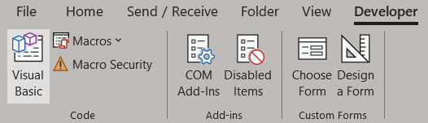
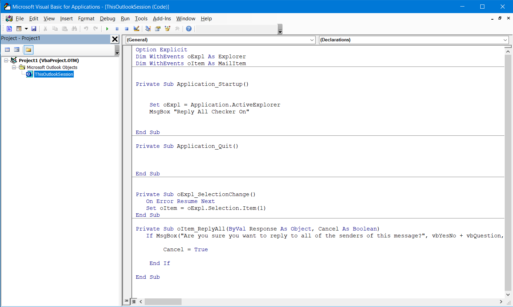
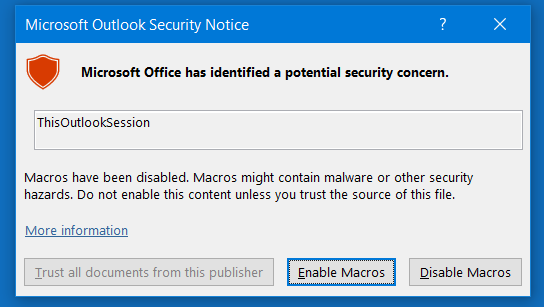
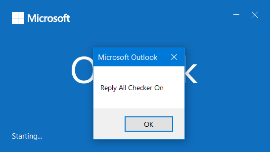
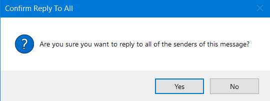

Here we create a pop-up to confirm if you really want to reply to all senders.
Enable the Developer tab in the ribbon (File > Options > Customize Ribbon) and open the Visual Basic editor.
Paste the code below into the editor then close it.
The code.
Option Explicit
Dim WithEvents oExpl As Explorer
Dim WithEvents oItem As MailItem
Private Sub Application_Startup()
Set oExpl = Application.ActiveExplorer
MsgBox "Reply All Checker On"
End Sub
Private Sub Application_Quit()
End Sub
Private Sub oExpl_SelectionChange()
On Error Resume Next
Set oItem = oExpl.Selection.Item(1)
End Sub
Private Sub oItem_ReplyAll(ByVal Response As Object, Cancel As Boolean)
If MsgBox("Are you sure you want to reply to all of the senders of this message?", vbYesNo + vbQuestion, "Confirm Reply To All") = vbNo Then
Cancel = True
End If
End Sub
When you restart Outlook, enable macros.
A pop-up will tell you that the reply all checker is on.
Now whenever you select "reply all" a pop-up will now ask you if are sure.
